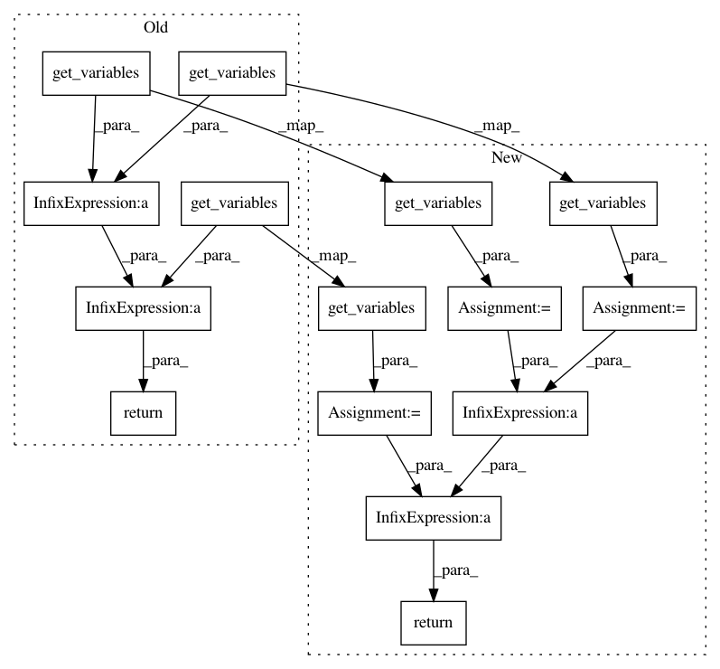

02fb71f730f6e600edbf27f58cea86209cb5dc55,tensorforce/core/distributions/gaussian.py,Gaussian,get_variables,#Gaussian#Any#,106
Before Change
return log_stddev_ratio + 0.5 * (sq_stddev1 + sq_mean_distance) / sq_stddev2 - 0.5
def get_variables(self, include_non_trainable=False):
return super(Gaussian, self).get_variables(include_non_trainable=include_non_trainable) + \
self.mean.get_variables(include_non_trainable=include_non_trainable) + \
self.log_stddev.get_variables(include_non_trainable=include_non_trainable)
After Change
return None
def get_variables(self, include_non_trainable=False):
distribution_variables = super(Gaussian, self).get_variables(include_non_trainable=include_non_trainable)
mean_variables = self.mean.get_variables(include_non_trainable=include_non_trainable)
log_stddev_variables = self.log_stddev.get_variables(include_non_trainable=include_non_trainable)
return distribution_variables + mean_variables + log_stddev_variables
In pattern: SUPERPATTERN
Frequency: 4
Non-data size: 15
Instances
Project Name: reinforceio/tensorforce
Commit Name: 02fb71f730f6e600edbf27f58cea86209cb5dc55
Time: 2017-10-15
Author: aok25@cl.cam.ac.uk
File Name: tensorforce/core/distributions/gaussian.py
Class Name: Gaussian
Method Name: get_variables
Project Name: reinforceio/tensorforce
Commit Name: 02fb71f730f6e600edbf27f58cea86209cb5dc55
Time: 2017-10-15
Author: aok25@cl.cam.ac.uk
File Name: tensorforce/core/distributions/beta.py
Class Name: Beta
Method Name: get_variables
Project Name: reinforceio/tensorforce
Commit Name: 02fb71f730f6e600edbf27f58cea86209cb5dc55
Time: 2017-10-15
Author: aok25@cl.cam.ac.uk
File Name: tensorforce/core/baselines/network_baseline.py
Class Name: NetworkBaseline
Method Name: get_variables
Project Name: reinforceio/tensorforce
Commit Name: 02fb71f730f6e600edbf27f58cea86209cb5dc55
Time: 2017-10-15
Author: aok25@cl.cam.ac.uk
File Name: tensorforce/core/networks/layer.py
Class Name: Dense
Method Name: get_variables